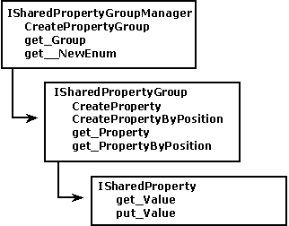

To prevent name collisions among properties created by different objects, the shared property manager (SPM) uses shared property groups. A shared property group is simply a namespace for a set of shared properties. Each property within a shared property group consists of a name, a value, and a position within the shared property group. Either the name or the position can be used to retrieve the property value. You can access and create shared property groups through the shared property group manager.
The SPM object model is shown in the following illustration.

The following are interfaces of the shared property manager:
ISharedPropertyGroupManager is used to create shared property groups and to obtain access to existing shared property groups. You can access the ISharedPropertyGroupManager interface by creating an instance of the SharedPropertyGroupManager object by using either IObjectContext::CreateInstance or CoCreateInstance.
ISharedPropertyGroup is used to create and access the shared properties in a shared property group. You can access the ISharedPropertyGroup interface by creating a SharedPropertyGroup object with the ISharedPropertyGroupManager::CreatePropertyGroup method. As with any COM object, you must release a SharedPropertyGroup object when you have finished using it.
ISharedProperty is used to set or retrieve the value of a shared property. A shared property can contain any data type that can be represented by a Variant. You can access the ISharedProperty interface by creating a SharedProperty object with the ISharedPropertyGroup::CreateProperty method or the ISharedPropertyGroup::CreatePropertyByPosition method. A SharedProperty object can be created or accessed only from within a SharedPropertyGroup object. Again, you must release a SharedProperty object when you have finished using it.
Â
Â